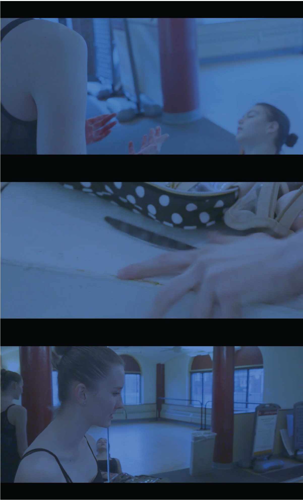

Film Reel — 2021
Filmmaking · 2021 · blue grading
A reinterpretation of Black Swan, this short film uses dominant blue color grading to mirror the characters’ inner world. The cool, desaturated palette evokes feelings of isolation, suppressed desire, and fragile calm—suggesting a psychological space where beauty and anxiety coexist.